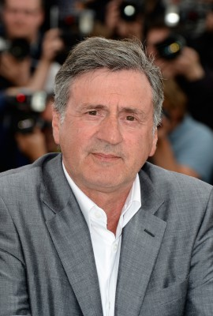
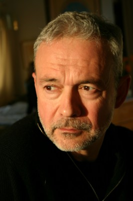

#9742 Die Brillante Mademoiselle Neila

 IMDB-Wertung: 6.9 / 10
IMDB-Wertung: 6.9 / 10  Metascore: 0
Metascore: 0 
Neïla Salah hat es geschafft: Sie wurde an der renommierten Pariser Assas Law School angenommen und ist auf dem besten Weg, Anwältin zu werden und sich damit endlich ihren großen Traum zu erfüllen. Doch schon am ersten Tag läuft alles schief: Neïla kommt zu spät – ausgerechnet zur Vorlesung von Professor Pierre Mazard, der für sein provokantes Verhalten und seine verbalen Ausfälle bekannt ist. In seiner nicht im Entferntesten politisch korrekten Art nimmt er die junge Studentin vor versammeltem Hörsaal sofort aufs Korn. Doch diese Begegnung bleibt nicht ohne Folgen. Mazard wird von der Universitätsleitung vor die Wahl gestellt: Entweder er verlässt die Uni oder er glättet die Wogen, indem er Neïla hilft, einen prestigeträchtigen Rhetorikwettbewerb zu gewinnen.
Jahr: 2017
Dauer: 95 Minuten
FSK:
Land: Frankreich Studio: Square OneTonspuren:
Untertitel: Deutsch,
Auflösung: 1080p (1920x808) Größe: 3809 MB
Genre: Drama, Komödie
Regisseur: Yvan Attal
Drehbuch: Victor Saint Macary, Yaël Langmann, Yvan Attal, Noé Debré, Yvan Attal
Soundtrack: Michael Brook
Darsteller:
-  Daniel Auteuil als Pierre Mazard
- Camélia Jordana als Neïla Salah
-  Jean-Philippe Puymartin als Le président des concours
- Nassim Si Ahmed als Le client
- Julia Malinbaum als Anissa
- Claude Perron als La dame au petit chien
- Jacques Brel als Himself (archive footage)
- Serge Gainsbourg als Himself (archive footage)
- Yasin Houicha als Mounir
- Nozha Khouadra als La mère de Neïla
- Nicolas Vaude als Grégoire Viviani - le président de l'université
- Jean-Baptiste Lafarge als Benjamin de Segonzac
- Virgil Leclaire als Keufran
- Zohra Benali als La grand-mère de Neïla
- Damien Zanoli als Jean Proutot
- Eddy Suiveng als Le premier gamin
- Abderahmane Cherif als Le deuxième gamin
- Fahmi Guerbaa als La première caillera
- Ayman Rahoui als La deuxième caillera
- Guillaume Duhesme als Le conducteur
- Philippe Houillez als Le recteur
- Olivier Adler als Le président du concours de Lille
- Paulette Joly als Madame Mazard
- Randa Berrouba-Tani als La première fille voilée
- Florent Hill als L'étudiant marseillais
- Arnaud Allain als Le prof de droit constitutionnel
- Jean-Luc Olivier als Le président du concours de Nantes
- Brandon Omekenge als Le chauffeur Uber
- Xavier Guelfi als Le premier étudiant
- Fanny Grosset als Le premier élève
- Ben Attal als Le deuxième élève
- Ian Fenelon als Le serveur
- Emmanuel Mayela Bilombo als Le troisième gamin
- Ayman Guermani als Le quatrième gamin
- Liviu Rosu als Le premier musicien dans la rame du métro
- Gheorghe Miron als Le deuxième musicien dans la rame de métro
- Romain Gary als Himself (archive footage)
- Claude Lévi-Strauss als Himself (archive footage)
- François Mitterrand als Himself (archive footage)
- Yves Mourousi als Himself (archive footage)
- Camille Griner als A student (uncredited)
Datei: X:\2017(A-F)\Brillante Mademoiselle Neila, Die (2017, FSK, 1920x808).mkv seit 26.10.2018
Festplatte: HD 2017(A-Z)-2018(A-F)
 Es gibt insgesamt 152 Filme in der Gruppe '2017(A-F)'
Es gibt insgesamt 152 Filme in der Gruppe '2017(A-F)'